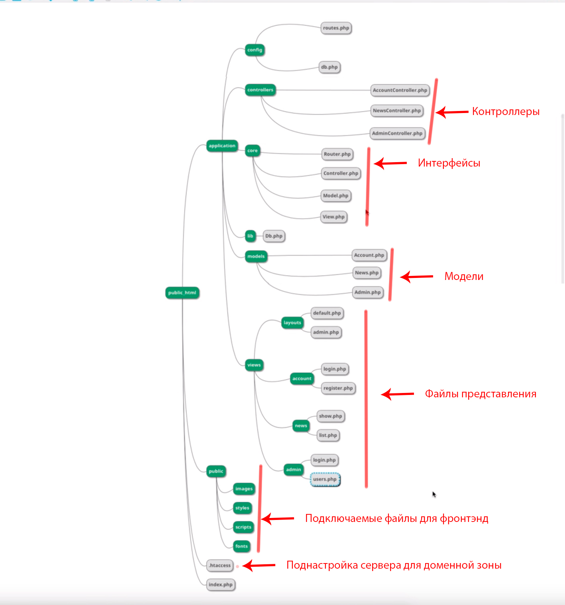

    <!-- подключаем модули html через пакет с помощью @@ -->
    @@include('_header.html')
    
    <main>
        <section>
            <h2>Тело</h2>
            <h2>Тело22</h2>
            <!--  -->
        </section>
        <!-- section end --> 
    </main>
    <!-- main end -->

    <!-- подключаем модули html через пакет с помощью @@ -->
    @@include('_footer.html')